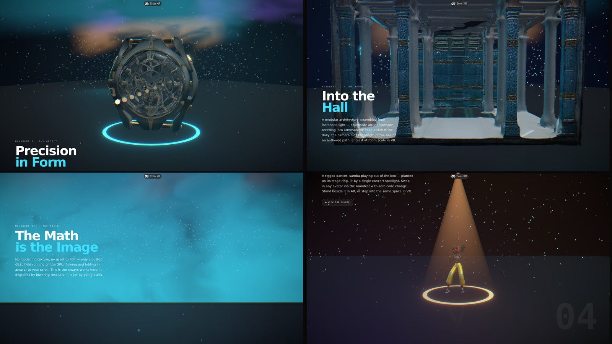

Describe an aesthetic. Get a cinematic, scroll-driven site — art-directed to match.
Five to seven layers at distinct depths, a perspective camera, every move scroll-linked and compositor-only. The grammar that makes a page feel filmed — not laid out.
These five are just a sample. Name any palette, mood, or reference — even your own brand — and the motion stays while the skill art-directs everything else to match. There is no house style.
No hand-built keyframes. A 5-phase pipeline — audit, storyboard, spec, build, polish — with taste guardrails and a transform/opacity performance budget, so what comes back is cinematic, not generic.
One self-contained .html file. No build, no keys, no dependencies. Paste it, open it, done. (Exactly how this page is built.)
A tested Next.js App Router project — GSAP ScrollTrigger + SplitText, Lenis smooth scroll, and an optional fal.ai pipeline for AI-generated chapter art.
The look is yours, but it's no longer improvised. A machine-readable contract — design.md + DTCG tokens — drives every build: color, type, spacing, and first-class motion tokens (the signature easing curves and pacing rules as data). Pick a look by swapping one theme file — or describe a new one.
W3C DTCG design tokens with a zero-dependency build → CSS variables + typed TS. Mode A stays zero-build.
Ready-made systems — Symmetric Monument · Clinical Noir · Storybook Geometry · Temporal Monument · Atmospheric Sublime · Warm Scrapbook · Naturalistic Drift · Brutalist Kinetic · Liquid Chrome · Botanical Editorial · Data Cinematic — each WCAG-AA checked, and any new look is one more theme file.
HeroParallax · PinnedReveal · DepthFigure · TiltCard · MorphBackground · HorizontalGallery · ScrubVideo · KineticHeadline · MagneticCursor — token-driven, both modes, doctor-verified.
Reviewed & hardened — an adversarial self-review found 50 issues; all critical/high fixed and re-verified (ledger: REVIEW.md). Every gate runs in CI via npm test.
The most impactful builds the skill ships — real-3D reference sites, scroll-driven three.js, no two sharing a technique: a WebXR colonnade, a procedural particle galaxy, a raymarched volumetric sky, a refractive glass monolith, and scroll-scrubbed camera flythroughs through a sculpture gallery, an overgrown atrium, and a liquid-chrome vault. Each handles context-loss, caps devicePixelRatio, gates its loop on visibility, and falls back to a permanent poster — never a blank canvas. Click any to scroll the real thing.
There is no menu of styles. Every site here is real and live — built from the same motion grammar and token contract, then art-directed into a different world. Describe any brief and you get a new one; the sites below are a glimpse, not a ceiling. Click any to scroll the real thing.
Eighteen shown — and that's not the limit. Every one is the same engine wearing a different face; the next world is one brief away.
The flagship's 3D assets aren't hand-modelled — one command runs a two-stage fal.ai pipeline per chapter (concept image → image-to-3D), auto-compresses each mesh in place (Draco + WebP, ~10–13 MB → ~1–3 MB) and auto-normalizes it onto its stage; the rigged dancer ships baked-in. Every effect answers prefers-reduced-motion, the mobile path sheds particle counts, and the scroll-camera freezes while a WebXR session presents.

Open /flagship in the Next.js template · vanilla twin in examples/flagship · stack notes in 3d-stack.md
A single scroll-choreography.json compiles to the website and its launch film — same beats, same easings, same depth choreography. Rebrand your site, and the video rebrands itself.
GSAP ScrollTrigger + Lenis. The reader’s scroll finger is the playhead. Responsive, reduced-motion-safe.
A paused GSAP timeline for HTML-to-video renderers — HyperFrames or Remotion. The clock is the playhead. Deterministic MP4.
Docs: compilation pipeline · video pipeline · FRAME.md
Claude Code plugin: /plugin marketplace add MustBeSimo/cinematic-scroll-skill